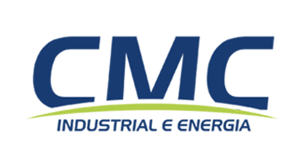

Compra de materiais de subestações internas de empresas como a Super Frango e subestações da Enel, tal como, SE Pacaembu, Porangatu, Cachoeira Alta, Paranaiguara, Quirinópolis e etc. Também realizei a aquisição de materiais para quadros de distribuição para o Brasil inteiro, mas, sendo o principal foco a região norte do país. De mesmo modo, realizei importação de materiais para usinas fotovoltaicas da Enel.

Estagiário
CMC Industrial e Energia
Exerci atividades em diversos setores da empresa, focado principalmente na área de engenharia e na administração das obras, como alocação de custos e recursos, através da plataforma UAU. Sendo realizado o mesmo em outros ramos do grupo CMC. Também estive em contato com o financeiro, administrativo e suprimentos, podendo assim, verificar toda a cadeia de processos da obra e da empresa.
Auxiliar de Montador
Db Tecnologia Acústica
Desempenhei às funções de fabricação, soldagem, montagem e manutenção de caixas de som. Lançamentos de movimentação de entradas, saídas e controle do estoque. Recepção, conferência, armazenagem de produtos e materiais nos almoxarifados. Organização do almoxarifado, expedição materiais e produtos, examinando-os, providenciando os despachos dos mesmos.
Assitente Eletrônico
Sulek Sistemas Eletrônicos
Realizava a fabricação de materiais e placas para às pistas de boliche distribuídas pela Kopp Tecnologia, tal como, sensores, cabeamento elétrico, sinal e sensores. Fazia parte das minhas atribuições a confecção e montagem da iluminação das pistas; Montagem de totens(painel utilizado por jogadores) e testes dos mesmos; separação dos materiais para serem enviados ao cliente.

 Home
Home
 Sobre mim
Sobre mim
 Formação Academica
Formação Academica
 Experiências
Experiências
 Contato
Contato